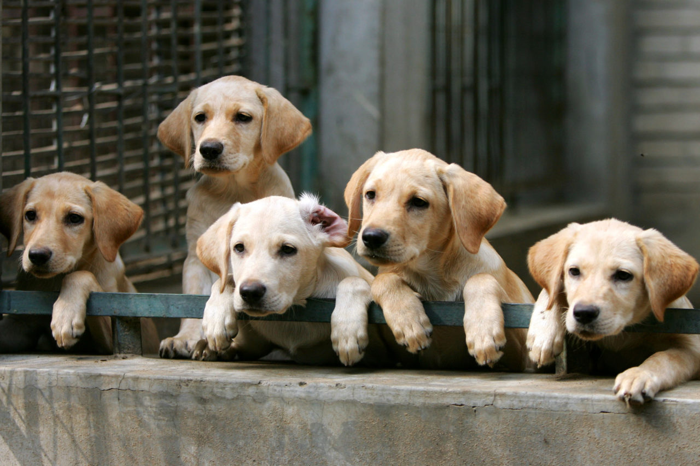
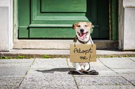
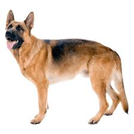
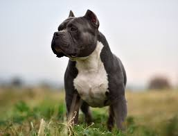

JULLIE
Meet Jullie, a sweet and furry companion facing a temporary setback due to a fever. Jullie's warm eyes, usually full of playfulness, now reflect a touch of discomfort. Despite feeling under the weather, her tail wags gently, a sign of the enduring spirit that defines dogs. Jullie's fur, though slightly ruffled, retains its comforting softness. As she rests, surrounded by the care of those who love her, one can't help but be reminded of the unconditional joy and loyalty dogs bring to our lives, even when they are under the weather.

JONY
Meet Jack, a charismatic black cat whose captivating demeanor tells a story of both mystery and resilience. Jack's sleek ebony fur and vibrant green eyes draw you in, but it's the tale of his injured eye that truly sets him apart. Despite enduring the trauma of an eye injury, Jack carries himself with grace and courage. The clouded gaze of his wounded eye speaks of battles faced and conquered. Yet, Jack doesn't let this setback define him; instead, it adds a layer of complexity to his charismatic persona. He moves through life, exploring and engaging, a testament to the strength that lies within a creature determined to embrace every moment, regardless of past challenges

GEMNAN SHEPHERD
Meet Max, a brave German Shepherd with a damaged ear. Even though one ear isn't working quite right, Max is always on the lookout for anything happening around. His fur is a mix of black and tan, and his eyes show that he's still alert and ready. Max might not hear as well from one side, but he's a loyal and strong companion, showcasing the resilient nature of our furry friends.

BULLY
Meet Bully, a resilient dog with a leg that doesn't work quite as it should. Despite this, Bully brings a lot of energy and happiness to every moment. Even with the leg challenge, Bully navigates the world with a determined spirit, proving that a dog's joy and love know no bounds, no matter the obstacles they face.